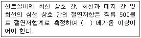
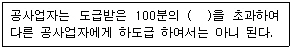
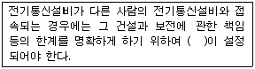
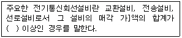
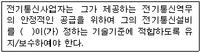
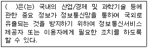

정보기기운용기능사 (2009-07-12 기출문제)
1과목: 전산 기초 이론
1. 중앙처리장치(CPU) 구성에 대한 설명으로 적합하지 않은 것은?
- 제어장치, 연산장치, 기억장치 등으로 구성되어 있다.
- 연산장치는 산술 및 논리 연산을 실행하는 전자회로로 구성되어 있다.
- 연산에 사용될 데이터를 영구 저장하는 저장레지스터(storage register)가 있다.
- 주기억장치로부터 연산할 데이터를 제공 받아 연산한 결과를 다시 보관하는 누산기(accumulator)가 있다.
(정답률: 77%)

2. 다음 중 운영체제의 제어프로그램에 포함되지 않은 것은?
- 서비스 프로그램
- 감시 프로그램
- 데이터관리 프로그램
- Job관리 프로그램
(정답률: 71%)
3. 2진수 음수(negative number)를 표현하는 방법이 아닌 것은?
- signed - magnitude 표현
- signed - 2’s complement 표현
- signed - 1’s complement 표현
- signed - gray 표현
(정답률: 66%)
4. 전가산기의 C(자리올림 수)를 논리적으로 나타낸 것은?
- C = x + y + z
- C = x · y · z
- C = xy + yz + xz
- C = xy + (x ⊕ y) · z
(정답률: 67%)
5. 스프레드시트에 대한 일반적인 특징이 아닌 것은?
- 임의의 자료를 수정하면 결과가 자동으로 바뀌는 자동계산 기능이 없다.
- 자료를 오름차순이나 내림차순으로 정렬할 수 있다.
- 자료를 이용하여 각종 그래프를 쉽게 그릴 수 있다.
- 처리된 결과를 문서 형태로 종이에 출력할 수 있다.
(정답률: 79%)
6. 다음 중 입력 펄스에 따라 그 상태가 미리 정해진 순서대로 바뀌는 레지스터는?
- 카운터
- 시프트레지스터
- 비트레지스터
- 명령레지스터
(정답률: 50%)
7. 1Gbyte의 USB 메모리에 저장할 수 있는 한글의 최대 글자 수는? (단, 한글 1자를 저장하기 위해서는 2byte가 필요하다.)
- 227
- 228
- 229
- 230
(정답률: 57%)
8. 데이터를 처리하기 위하여 주기억장치에 기억된 명령을 하나씩 가져와 해독한 후 그 내용에 따라 해당하는 장치에 지시를 하는 장치는?
- 제어장치
- 연산장치
- 기억장치
- 입/출력 장치
(정답률: 70%)
9. 손바닥 위에 올려놓고 사용하기 편리한 컴퓨터는?
- 팜탑(PalmTop)
- 랩탑(LapTop)
- 노트북(NoteBook)
- 데스크탑(DeskTop)
(정답률: 78%)
10. 프로그래밍에서 어떠한 문제를 해결하기 위한 절차와 방법을 무엇이라 하는가?
- 프로세서
- 서브루틴
- 알고리즘
- 객체지향
(정답률: 75%)
2과목: 정보 기기 운용
11. 데이터베이스(database)를 구축하는 목적이 아닌 것은?
- 데이터의 공유
- 데이터의 분산
- 데이터의 일관성 유지
- 데이터의 중복성 최소화
(정답률: 73%)
12. 미켈란젤로 바이러스에 대한 설명 중 옳지 않은 것은?
- 감염시 메모리 사용 용량을 136KB로 증가시킨다.
- 부트 바이러스 일종이다.
- 3월 6일 발병하여 자료를 파괴시킨다.
- 감염시 부팅 및 입출력 속도가 현저하게 느려진다.
(정답률: 70%)
13. 5Ω의 저항 10개를 직렬로 연결한 합성 저항 값은 이것들을 병렬로 연결한 합성 저항 값의 몇 배가 되는가?
- 10
- 50
- 100
- 150
(정답률: 56%)
14. 어떤 전원 회로에서 부하시 전압이 10[V]이고, 무부하시 전압이 12[V]일 때 나오는 직류전원회로의 전압 변동률은?
- 20[%]
- 30[%]
- 40[%]
- 50[%]
(정답률: 67%)
15. 사용자의 컴퓨터 자원 접근 처리와 서비스 제공에서의 인증, 인가 및 요금 계산 기능을 제공하는 서버로, 일반적으로 네트워크 접근과 게이트웨이 서버와의 상호 작용을 통하여 사용자 정보가 있는 데이터베이스와 디렉토리에 상호작용하는 것은?
- DNS 서버
- 프록시 서버
- 웹 서버
- AAA 서버
(정답률: 54%)
16. 다음 중 다이얼의 3요소가 아닌 것은?
- 임펄스 속도
- 최소휴지시간
- 메이크율
- 시간 조절기
(정답률: 49%)
17. 컴퓨터 바이러스의 감염 경로로 옳지 않은 것은?
- 프로그램 불법 복사에 의한 감염
- 인터넷 통신에 의한 감염
- 다수의 사람이 공용으로 사용할 경우 디스켓 등에 의한 감염
- 살아있는 생물처럼 공기에 의한 감염
(정답률: 89%)
18. 다음 중 일정한 전압을 유지시켜 주는 장비는?
- AVR
- 변압기
- DVD
- VOD
(정답률: 78%)
19. 다음 중 HDTV에 대한 설명으로 가장 적합하지 않은 것은?
- 고품위 TV라 한다.
- 주사선이 1125개가 있다.
- 음성은 아날로그로 처리한다.
- 화면의 가로와 세로 비는 16:9이다.
(정답률: 76%)
20. 하나의 파형이 계속 변화를 이루다 처음의 위치로 돌아오는 시간이 주기(T)이다. 주기(T)를 계산하는 공식 “T = 1/f에서 "f"가 뜻하는 것은?
- 전파
- 주파수
- 열
- 잡음
(정답률: 82%)
21. 컴퓨터에서 발생한 정보를 마이크로필름에 축소 출력하는 시스템은?
- COM
- CAR
- 전자파일링 시스템
- 데이트베이스 시스템
(정답률: 61%)
22. 일반적인 팩시밀리의 구성요소가 아닌 것은?
- 광전변환장치
- 수신기록장치
- 에러편집장치
- 동기장치
(정답률: 68%)
23. 220V를 사용하는 어떤 정보기기에 2A의 전류를 흘렸을 때 소모되는 전력은 몇 W인가?
- 100
- 220
- 300
- 440
(정답률: 77%)
24. 다음 중 웹 서버 소프트웨어가 아닌 것은?
- apache
- IIS
- WebtoB
- HTML
(정답률: 61%)
25. 마이크로필름에 기록되어 있는 정보를 고속으로 자동 검색하는 장치는?
- COM(Computer Output Microfilm)
- CAR(Computer Assisted Retrieval)
- CAD(Computer Aided Design)
- CIM((Computer Input Microfilm)
(정답률: 65%)
26. 컴퓨터실이나 전산실의 화재 대비에 가장 적당한 소화기는 무엇인가?
- 아르곤 가스 소화기
- 네온 가스 소화기
- ABC 분말 소화기
- 이산화탄소 소화기
(정답률: 85%)
27. 데이터 통신용 단말기 중에서 인쇄되거나 또는 손으로 쓴 글씨들을 컴퓨터로 인식하는 장치는?
- MICR
- OMR
- OCR
- CRT
(정답률: 60%)
28. 복수의 데이터신호를 중복시켜서 하나의 데이터신호로 만들어 내는 데이터 전송기기는?
- 모뎀기
- 다중화기
- 제어기
- CCTV
(정답률: 80%)
29. 컴퓨터 주변장치뿐만 아니라 비디오카메라, 오디오 제품, 텔레비전, VCR 등의 가전기기를 개인용 컴퓨터에 접속하는 직렬 인터페이스 규격은?
- USB
- RS-232C
- IEEE 1394
- SCSI
(정답률: 47%)
30. 시간이 변하더라도 전자 흐름의 방향과 크기가 항상 일정한 전류는?
- 직류
- 교류
- 맥류
- 와전류
(정답률: 80%)
3과목: 정보 통신 일반
31. 다음 중 불평형 구조의 선로로 동심 원통형을 이루는 케이블은?
- 무장하케이블
- 장하케이블
- 동축케이블
- 평등케이블
(정답률: 84%)
32. 다음 중 펄스부호변조 방식을 의미하는 것은?
- PAM
- PCM
- PPM
- PWM
(정답률: 69%)
33. 정보통신시스템에서 데이터 전송계의 구성 요소가 아닌 것은?
- 단말장치
- 통신제어장치
- 컴퓨터장치
- 신호변환장치
(정답률: 60%)
34. 데이터 전송시 에러가 발생하였을 경우 수신측은 송신측에 에러의 발생을 알리고 송신측이 다시 재전송하는 방식은?
- ARQ(Automatic Repeat ReQuest)
- FEC(Forward Error Correction_
- TRIB(Transfer Rate of Information Bits)
- CRC(Cyclic Redundancy Code)
(정답률: 71%)
35. OSI 7계층에서 하위 계층은 어떤 계층들인가?
- 물리계층, 데이터링크계층, 네트워크계층
- 세션계층, 표현계층, 네트워크계층
- 물리계층, 트랜스포트계층, 표현계층
- 데이트링크계층, 트랜스포트계층, 세션계층
(정답률: 86%)
36. 10개국(station)을 서로 망형 통신망으로 구성시 최소로 필요한 통신 회선 수는?
- 15
- 25
- 35
- 45
(정답률: 74%)
37. 다음 중 백색 잡음(white noise)의 특성과 가장 거리가 먼 것은?
- 잡음세력이 시간에 대해 무관한 크기를 갖는다.
- 거의 모든 주파수에 걸쳐 잡음이 존재한다.
- 분자나 원자들의 운동에서 기인한다.
- 순간적으로 잡음이 발생한다.
(정답률: 59%)
38. 다음 중 이동 통신망에 사용되는 코드분할 다원접속 방식은?
- GSM
- CDMA
- AMPS
- CSMA
(정답률: 84%)
39. 양쪽으로 신호의 전송이 가능하나, 2선식 선로운용에서 필요한 방향으로만 전송이 이루어지는 통신방식은?
- 전이중 통신방식
- 단향 통신방식
- 반이중 통신방식
- 다중 통신방식
(정답률: 71%)
40. 다음 OSI 7계층 중 단말과 전송매체 사이의 인터페이스와 밀접한 관계가 있는 계층은?
- 물리계층
- 네트워크계층
- 트랜스포트계층
- 데이터링크계층
(정답률: 47%)
41. 개인용 컴퓨터를 통해 이용자 간에 서신을 상호 교환 할 수 있는 정보통신 서비스를 무엇이라 하는가?
- 전화 회의
- 전자우편
- 데이터베이스
- CATV
(정답률: 78%)
42. 다음 중 통신제어장치의 역할과 거리가 먼 것은?
- 컴퓨터의 부하를 많이 줄여준다.
- 많은 단말기들을 제어한다.
- 전송제어를 행한다.
- 디스크의 저장 데이터를 검사한다.
(정답률: 68%)
43. 단말기에서 MODEM과 연결되는 RS-232C 25핀 커넥터에서 2번 핀의 기능은?
- 송신요구
- 전송해제
- 수신
- 송신
(정답률: 69%)
44. 데이터 통신시 연결설정 및 연결해제의 단계가 없이 각 패킷마다 수신처 주소를 기반으로 네트워크 내에서 라우팅 되는 패킷교환 방식은?
- 데이터그램방식
- 가상회선방식
- 메시지교환방식
- 회선교환방식
(정답률: 30%)
45. 비동기 전송 방식(ATM)에서 고정 셀(cell)의 크기는?
- 53바이트
- 48바이트
- 24바이트
- 16바이트
(정답률: 43%)
46. 다음 중 가입자가 상대 가입자를 직접 호출하는 교환 방식은?
- 회선교환
- 축적교환
- 메시지교환
- 패킷교환
(정답률: 50%)
47. 멀티미디어 데이터의 표준화 관련 MPEG은 어떤 의미인가?
- 음서의 압축 표준
- 팩시밀리 압축 표준
- 동화상 압축 표준
- 문자 메시지 압축 표준
(정답률: 64%)
48. 다음 중 광통신시스템의 적합한 구성은?
- 송신부-전광변환-광섬유-광전변환-수신부
- 발광부-음성변환-중계부-음성변환-수광부
- 부호부-표본화-전송부-양자화-복호부
- 음성-전기신호-전광변환-광신호-음성
(정답률: 75%)
49. 8진 PSK 변조에서 동기식 모뎀의 신호 변조속도가 2400 [Baud]인 경우 전송속도는 몇 [bps] 인가?
- 1200
- 2400
- 4800
- 7200
(정답률: 75%)
50. 광섬유의 구조 중 빛이 전파되는 통로를 무엇이라 하는가?
- 코어(Core)
- 클래딩(Cladding)
- 버퍼
- 폼 스킨
(정답률: 78%)
4과목: 정보 통신 업무 규정
51. 다음 ( )안에 들어갈 내용으로 가장 적합한 것은?

- 1
- 2
- 5
- 10
(정답률: 60%)
52. 단말장치의 전자파장해 방지기준 및 전자파장해로부터의 보고기준 등은 어느 법령이 정하는 바에 따르는가?
- 전기통신에 관한 법령
- 전파에 관한 법령
- 정보통신에 관한 법령
- 정보통신공사에 관한 법령
(정답률: 61%)
53. 다음 ( )안에 들어갈 내용으로 가장 적합한 것은?

- 10
- 30
- 50
- 70
(정답률: 58%)
54. 다음 ( )안에 들어갈 내용으로 가장 적합한 것은?

- 경계점
- 절분점
- 단자함
- 분계점
(정답률: 83%)
55. 다음 중 정보통신서비스제공자 및 이용자의 책무로 적합하지 않은 것은?
- 정보통신서비스제공자는 이용자의 개인정보를 보호하여야 한다.
- 정보통신서비스제공자는 정보화 사회 조성을 위한 금융지원을 하여야 한다.
- 정보통신서비스제공자는 이용자의 권익보호와 정보이용 능력의 향상에 이바지하여야 한다.
- 이용자는 건전한 정보사회가 정착되도록 노력하여야 한다.
(정답률: 72%)
56. 모든 이용자가 언제 어디서나 적정한 요금으로 제공 받을 수 있는 기본적인 전기통신역무를 무엇이라고 하는가?
- 통신이용 역무
- 기간통신 역무
- 보편적 역무
- 일반적 역무
(정답률: 74%)
57. 다음 ( )안에 들어갈 내용으로 가장 중요한 것은?

- 10억원
- 30억원
- 50억원
- 100억원
(정답률: 51%)
58. 다음 중 기간통신사업자가 제공하는 전기통신역무에 관한 요금 및 이용조건 등을 규정한 것은?
- 기술기준
- 이용약관
- 업무규정
- 요금규정
(정답률: 79%)
59. 다음 ( )안에 들어갈 내용으로 가장 적합한 것은?

- 전파연구소장
- 방송통신위원회
- 대통령령
- 지식경제부장관
(정답률: 53%)
60. 다음 ( )안에 들어갈 내용으로 가장 적합한 것은?

- 정부
- 법무부장관
- 방송통신위원회
- 지식경제부장관
(정답률: 73%)